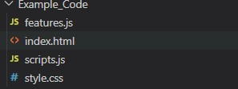
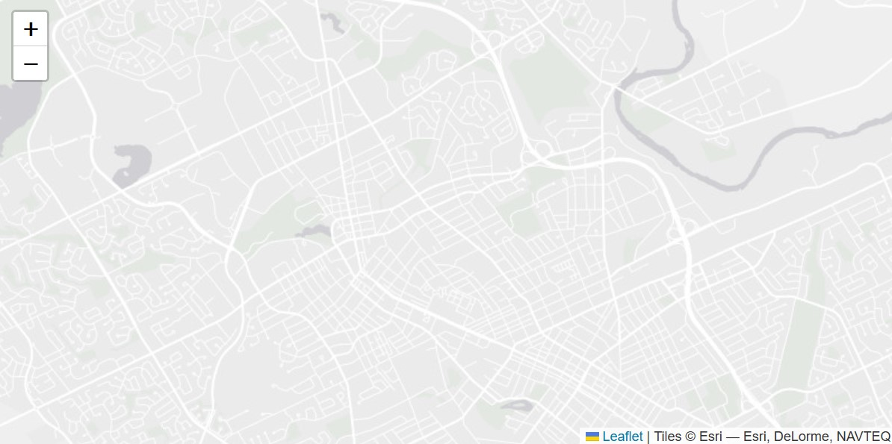
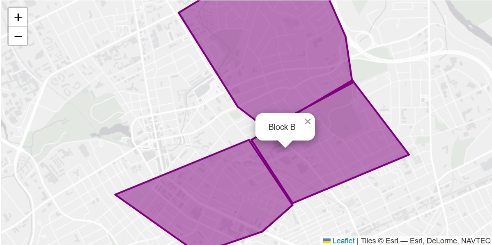

Webpages are a perfect way to display geographical information and share it to a public audience. Using modern JavaScript libraries, it makes it very easy for anyone to create interactive web maps. The interactivity of a web map allows users to zoom, pan, and interact with objects in order to get a deeper understanding of the underlying data. While this tutorial does include some prior knowledge about JavaScript, the final product of creating an interactive web map is fully possible by following this tutorial. To what is possible through this article, please visit the final result section.
For the purposes of this project we will be working out of Visual Studio Code (VS Code), however feel free to use any other code editor which you are comfortable with and which supports HTML/CSS and JavaScript. To Download VS Code, start by heading to the official VS Code website and click on download latest version. From, here follow the install options using default values. Once done installing, open the editor.
Using VS Code or preferred code editor, create a new project folder. This folder will house all our files needed for our interactive web map. To do this, create a folder anywhere on your computer and in VS Code click on file -> Open Folder, and then search for your project folder.
We will now be creating our HTML file which will host our web map. While we can accomplish quite a bit with only an HTML file, we will need to combine it with CSS and JavaScript (JS) files to give the web page some life. Create a file named 'index.html' in your project folder. Click here to learn more about the HTML/CSS/JS stack.
Now create a CSS (Cascading Style Sheet) file in your project folder and name it 'style.css'. This file will hold the basic styling of our project. Find out more about CSS styling here.
We will now prepare our GeoJSON file to be displayed in our web map. A GeoJson is a standard encoding format which houses geographic information such as points, Lines, and Polygons. Each feature can include various properties which will be important for our mapping purposes. We can make a sample GeoJSON file like the one found below using this resource. We can also convert other common geospatial file formats such as shapefiles into GeoJSON with converters. If possible, try to have the Coordinate reference system set to ESPG:3857 which is the default for Leaflet. For this tutorial we will be using the following example file:
{
"type": "FeatureCollection",
"features": [
{
"type": "Feature",
"properties": {"name": "Block A"},
"geometry": {
"coordinates": [
[
[
-80.51655683549453,
43.45361178377664
],
[
-80.5076834672198,
43.45583293506874
],
[
-80.5033997721903,
43.45849820893079
],
[
-80.5095193365181,
43.46516087961217
],
[
-80.5281840077167,
43.45960870503376
],
[
-80.51655683549453,
43.45361178377664
]
]
],
"type": "Polygon"
}
},
{
"type": "Feature",
"properties": {"name": "Block B"},
"geometry": {
"coordinates": [
[
[
-80.5033997721903,
43.45872030978333
],
[
-80.48718292672288,
43.4636063221277
],
[
-80.49513836034846,
43.47115665543703
],
[
-80.5092133583014,
43.46516087961217
],
[
-80.5033997721903,
43.45872030978333
]
]
],
"type": "Polygon"
}
},
{
"type": "Feature",
"properties": {"name": "Block C"},
"geometry": {
"coordinates": [
[
[
-80.49513836034846,
43.470934600271534
],
[
-80.49605629499762,
43.475597587414114
],
[
-80.50217585932494,
43.485588491169636
],
[
-80.51931063944197,
43.4780399608982
],
[
-80.51104922759968,
43.46849193960753
],
[
-80.50707151078689,
43.466271253339784
],
[
-80.49513836034846,
43.470934600271534
]
]
],
"type": "Polygon"
}
}
]
}
You can learn more about GeoJSON here, and use a GeoJSON validator to make sure that the file is correctly formatted.
Now that we have our GeoJSON file, we need to add it to the current project folder. For the purposes of this tutorial, we do not assume any external knowledge on how JavaScript’s fetch API works. However, we won’t be able to load in other files easily with vanilla JS. For this reason, we recommend creating a JavaScript file with a variable that will hold the GeoJSON data in a JSON object. For this tutorial we will create a JavaScript file called features.js with a variable ‘data’ holding our GeoJSON data. If you want to learn about how, you could use a web server and properly access local JSON files click here.
var data = {..GeoJSON here..};NOTE: Don’t forget to include a semi-colon after the variable initialization in the JavaScript file.
Finally, the last file we need to add is the JavaScript file which will hold the variables and functions that will make the making of the web map possible. We will name this file 'scripts.js'. Our project folder should now look like the following:
Now that we've set up all our files, we are ready to start coding our web map. The first step is to prepare the HTML document with a basic set of code. To learn about the basics of HTML attributes and syntax click here. We want to initialize the doctype and then create an html element. From there we split up the html element using a head element which will host metadata and links to our CSS and JavaScript files. We also want to create a body element which will hold our map. The end code should look something like this:
<!DOCTYPE html>
<html>
<head>
</head>
<body>
</body>
</html>
We will now create a div element within the body of our HTML that will house our web map. We will give it a class name of "map" so that we can adjust the CSS styling later.
<body>
<div class="map"></div>
</body>
As previously mentioned, we will use CSS to better stylize our webpage. To make a connection to the style sheet we will need to make a link to the CSS and HTML files as seen below. We will also link Leaflet’s style sheet so we can easily have the Leaflet API's styling in our own project. We can use a hyperlink tag (<a>) and include the CSS file as the hypertext reference (href). To access Leaflet’s style sheet, we can use a URL to their API which hosts the style sheet. Copy and paste the following code into the head element of your html file:
<head>
<link rel="stylesheet" href="https://unpkg.com/leaflet@1.9.3/dist/leaflet.css"
integrity="sha256-kLaT2GOSpHechhsozzB+flnD+zUyjE2LlfWPgU04xyI="
crossorigin=""/>
<link rel="stylesheet" href="style.css"/>
</head>
Using a similar method as with the style sheets, we will need to link to the official JavaScript file provided by the Leaflet API in our head element but using a script tag instead. To include our own JavaScript files (remember our GeoJSON is being stored in one), we will need to place it in our body element, below our map div we created in step 9. It is placed here so that the JavaScript which will hold the code to our map will run after the creation of the map div element. Make sure the data file is placed before the script file so that the script file can take use the variable initialized in the data file. The index html so far should look something like the following:
<!DOCTYPE html>
<html>
<head>
<link rel="stylesheet" href="style.css"/>
<link rel="stylesheet" href="https://unpkg.com/leaflet@1.9.3/dist/leaflet.css"
integrity="sha256-kLaT2GOSpHechhsozzB+flnD+zUyjE2LlfWPgU04xyI="
crossorigin=""/>
<script src="https://unpkg.com/leaflet@1.9.3/dist/leaflet.js"
integrity="sha256-WBkoXOwTeyKclOHuWtc+i2uENFpDZ9YPdf5Hf+D7ewM="
crossorigin=""></script>
</head>
<body>
<div id="map"></div>
<script type="text/javascript" src="features.js"></script>
<script type="text/javascript" src="scripts.js"></script>
</body>
</html>
Now that we have our map div element, we want to adjust its size within our style sheet. Since we have properly linked the style.css with the index.html, we can create a style rule specifically for our map div. We can do this by adding a '#' before our class name followed by curly brackets. For this example we want to set height and width of our map like the following:
#map {
height: 400px;
width: 800px;
}
Learn more about styling here.
NOTE: To better visualize how big your element is, temporarily change your background color (bg-color) to another color like black.
Find the CRS (coordinate reference system) of your GeoJSON. This can usually be found in the metadata of your GeoJSON son under the properties fields and should have an ESPG code (e.g. ESPG:3857). In our example, we used an ESPG:3857 code to match the default Leaflet system. Click here to learn more about Coordinate Reference Systems.
Next, we will finally create our map object which will hold our web map. This initialization will be placed in our scripts.js folder and since we’ve linked the two together in step 11, the code will run when accessing the HTML file. The code below creates a map variable, which is a map object from the Leaflet library ("L"). We should now see an empty map when we look at our HTML file.
var map = L.map('map');
If you were able to change your GeoJSON file into ESPG:3857, then you can skip this step since this is Leaflet’s default coordinate reference system. To correctly change the map's CRS, we can pass it in as an option in the line where we created the map. The following is an example of how we would change a CRS.
var map = L.map('map', {crs: L.CRS.EPSG3395});
NOTE: We do not need to do this since our GeoJSON uses the ESPG:3857 CRS.
Now that we have our map, we can now customize the base layer of the map. The base layer we choose should depend on the purpose of our map in conjunction with the overlying geographic data we wish to display. Essentially, we want our overlying information to be clear and visible while still having the useful context of the base map. Some of the most popular sources of base maps include OSM, Mapbox, and others which can be found here. For this project we will be using the light canvas base map from Esri since the details won't take away from our GeoJSON overlying layer.
NOTE: Many private providers of data require the use of an access token to access the data from their respective API’s. How the access token works will vary between providers so make sure to read their documentation.
Now that you have selected your style of base map, we can add it onto our map object. We can do so by creating a new Leaflet “TileLayer” object in our JS Script with the correct URL and then add it to our map object using the “addTo” function. The following code is an example of how this can be achieved.
var Esri_WorldGrayCanvas = L.tileLayer('https://server.arcgisonline.com/ArcGIS/rest/services/Canvas/World_Light_Gray_Base/MapServer/tile/{z}/{y}/{x}', {
attribution: 'Tiles © Esri — Esri, DeLorme, NAVTEQ',
maxZoom: 16
}).addTo(map);
If you can currently see your map, you will note that it is centered around the center of the map (at 0 latitude, 0 longitude) and is possibly too zoomed in, or zoomed out for the GeoJSON layer we will be adding on later. To solve this, we need to both start the user in the correct spot and at the correct spatial extent. By looking at your GeoJSON, you can get an estimate as to where the center of the map should be by looking at coordinate points of your layer. As for the spatial extent (or zoom level), the levels range from 1 to 13 with 1 covering the most surface area and 13 the least. Pass these optional variables into the block of code where we initialized the map.
var map = L.map('map').setView([43.467, -80.508], 13);
Now that we have added in the base map data into our map, we can now open our HTML file (preferably in a browser or anywhere that can run JavaScript). Your map should look something like this:
Now that we have set up the base layer, we can now start to add our GeoJSON layer. To do this, we need to create a new Leaflet GeoJSON layer and add it to our map object, like how we added a TileLayer to our map. Remember that our GeoJSON data is being held in our data JavaScript file so all we need to do is to access the data variable we initialized. The following is an example using our GeoJSON folder:
L.geoJSON(data).addTo(map);
Once we have added the GeoJSON layer, we should be able to refresh our page and see the GeoJSON layer since we already panned and zoomed the map to the correct location. If the map start view is not correct (zoom, or location), you can now better adjust the view.
Leaflet offers many ways to style their layer features. To do this we need a function to return a dictionary of design options so that while the layer is being adding to the map, each feature will go through the same styling. The function will then be passed into the initialization code of the GeoJSON layer as the style option. You can explore more about all the design options here.
Initialize a function called styleFunction, inside the function return a dictionary with color of choice and fillOpacity. Then include this as a style option in your GeoJSON initialization. The code should look something like the following:
function styleFunction(){
return {color: "purple", fillOpacity: "0.5"};
};
L.geoJSON(data, {style: styleFunction}).addTo(map);
Now to make your map more accessible to the end user, we want to include feature labels. If there is absolutely no information that needs to be displayed, you may skip to step 24. Leaflet offers an object named Popups. Developers can bind popups to certain features which display bits of information. For example, when we created our GeoJSON, we gave each feature a name. Find a bit of information that is common amongst features which you would want displayed in your map.
Just as we did with step 20, we want to create a create a function which we can add to our GeoJSON layer code so that we can bind popups to each feature. Since this function is a bit more complicated, we split it into two steps. The function will take a feature and a layer, then check to make sure that feature has a properties section and if the properties include the property key that we selected from the step above. If the feature has both then it will bind a popup containing the information selected into the current layer. Now if we know for sure each feature will have this check then this would not be necessary, but this is generally a good technique in web programming. Our function will look like the following:
function displayInfo(feature, layer) {
// does this feature have a property named popupContent?
if (feature.properties && feature.properties.name) {
layer.bindPopup(feature.properties.name);
}
layer.bindPopup(feature.properties.name);
}
Now that we have our function that will bind the popups to the features, we now need to add our function into the block of code where we added our GeoJSON file to the map. To do this we can use Leaflet’s onEachFeature option to call a function on each feature before it gets added to the map.
L.geoJSON(data, {style: styleFunction, onEachFeature: displayInfo}).addTo(map);
Now that we have added some additional accessibility features, we should now see that our map has the correct popups that we desire. This was the final step in the making of our map. While we only briefly walked through one way of doing it, the official Leaflet documentation is a great place to learn more about the API’s features. This is a screenshot from our current map.
Now that we finished the creation of our map, we need to add an appropriate title to our map. A title is important as it gives the viewer an appropriate description of what the map is displaying. To achieve this, we will add a header element above our map.
<h2>Waterloo Blocks</h2>
This is an important step that is often overlooked, but it is very important to keep track of where you are getting your data from. In this example, we used a base map data that came from a provider. Perhaps your GeoJSON came from an outside source. Make sure to include these somewhere on your webpage. This can be achieved using any sort of html text elements such as <p> for paragraphs or <a> for hyperlinks.
We are finally done created a web map. Below you can find a live and working example of what we made throughout this tutorial. You can also find all the source code for this on this GitHub repository.